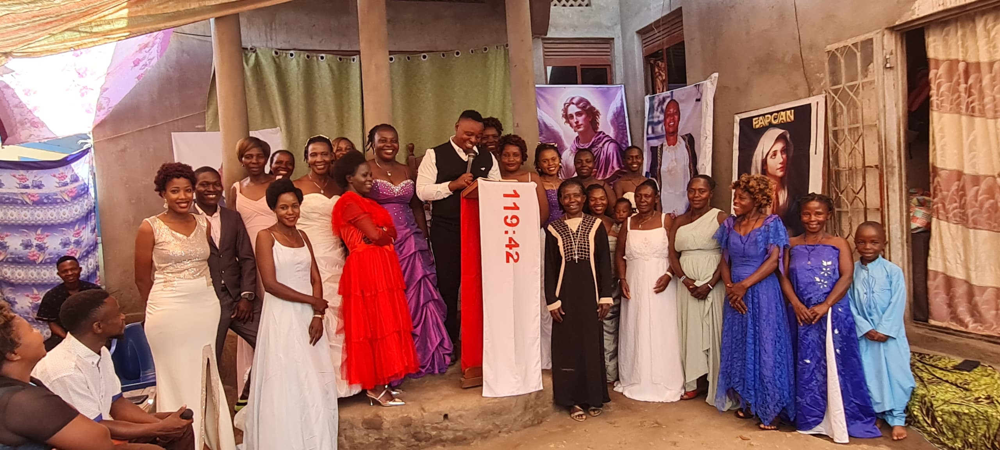
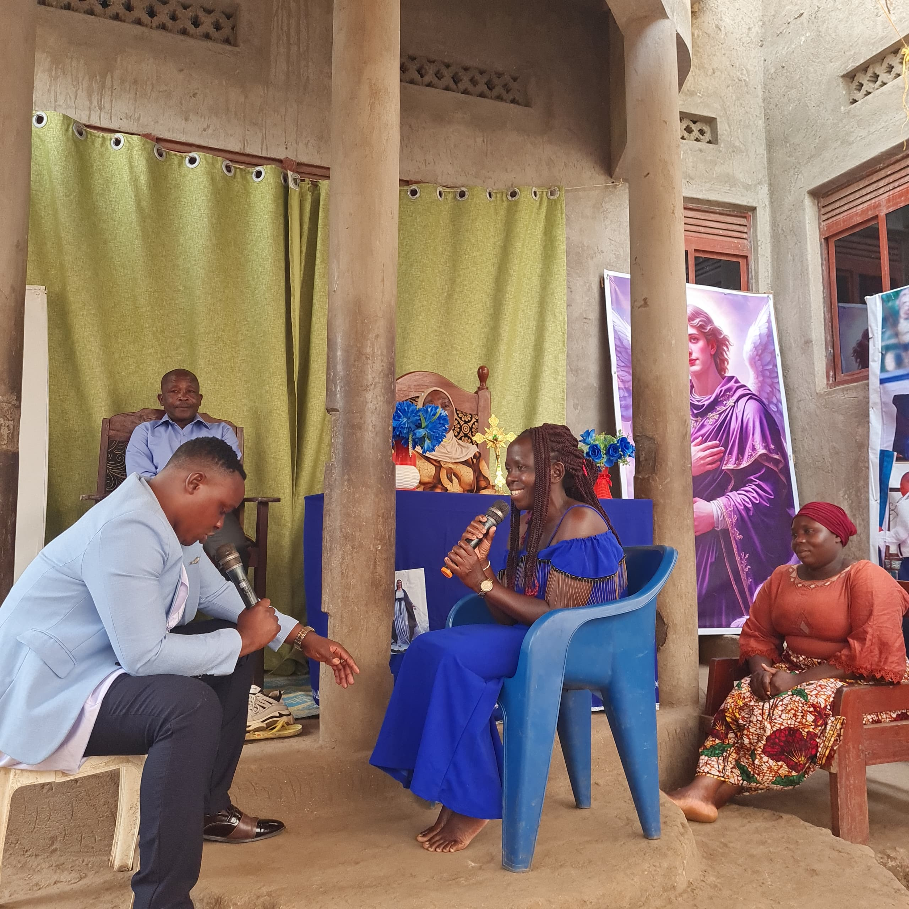
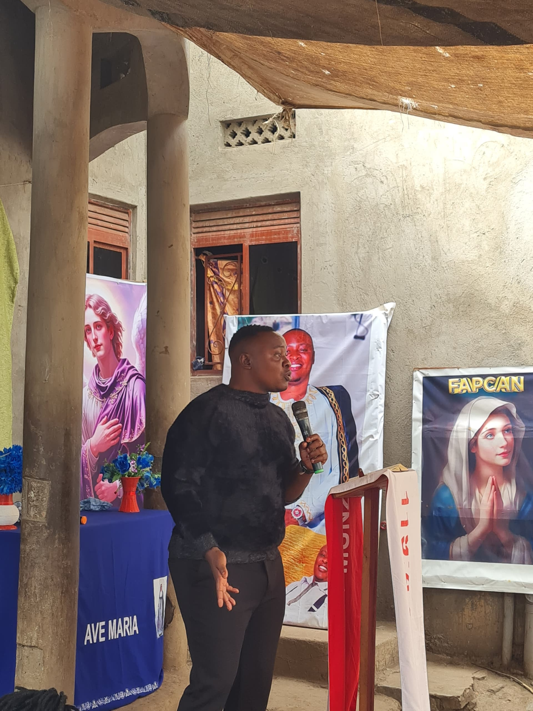
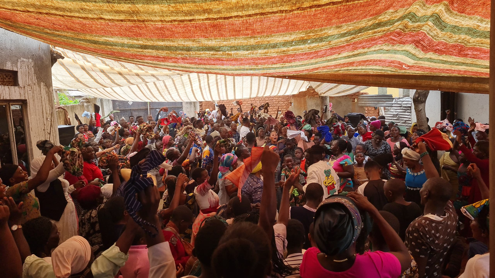
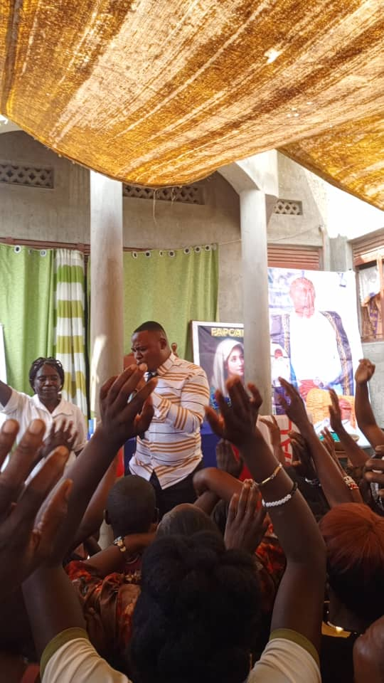
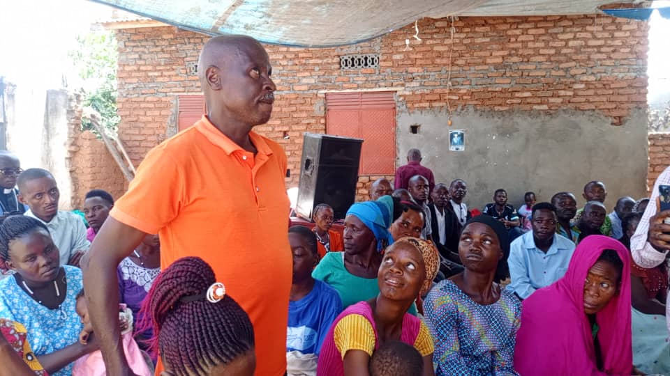
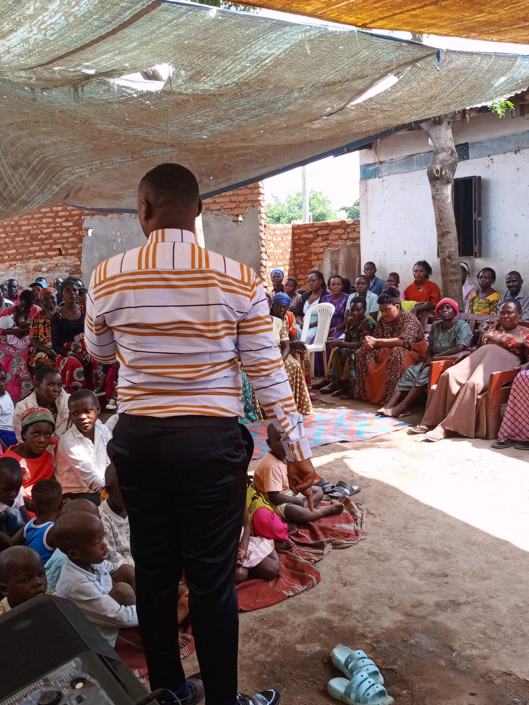
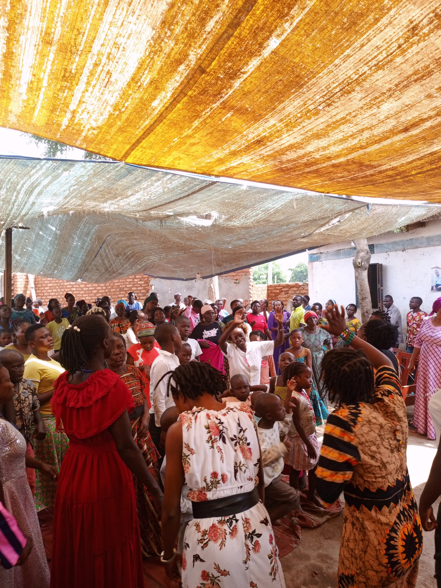

The foundation of our mission and the heartbeat of our gatherings. Through prayer, lives are transformed, hope is restored, and communities are strengthened.
Our prayer sessions are Spirit-led, inclusive, and deeply rooted in faith and unity — nurturing both individual and community transformation.
Standing in the gap for families, communities, and the nation
Expressing gratitude and lifting hearts through music and thanksgiving
Anchoring our prayers firmly in the Word of God
Creating space for individuals to connect deeply with God
Trusting God for breakthrough, healing, and renewal

Developing a deeper relationship with God and a stronger sense of purpose across all age groups and backgrounds.
Finding peace, hope, and renewal in times of struggle — many have experienced transformative healing through consistent prayer.
Turning away from destructive paths and embracing positive change — many souls have been guided toward a life of faith and purpose.
Building strong bonds of love, support, and togetherness that extend beyond the prayer session into everyday community life.





A glimpse into our Spirit-filled Saturday gatherings at Kidodo, Kasese.
A glimpse into our Saturday gathering at Kidodo
More Recordings

'">Church Session 2 · Kidodo
Church Session 3 · Kidodo

'">Church Session 4 · Kasese
Church Session 5 · Kasese
"Coming to FAPCAN prayer sessions changed my life completely. I arrived broken and hopeless — through prayer I found healing, direction, and a community that truly cares."
"The Saturday gatherings give me strength for the whole week. I have seen healings I cannot explain with words — only faith. Alfred and this community are truly special."
"I am Muslim, but the welcome I received at FAPCAN was unlike anything I expected. Prayer here is for everyone. The unity I found here is real and lasting."
Every session is open, welcoming, and free. Come as you are — and experience the power of prayer with the FAPCAN community.